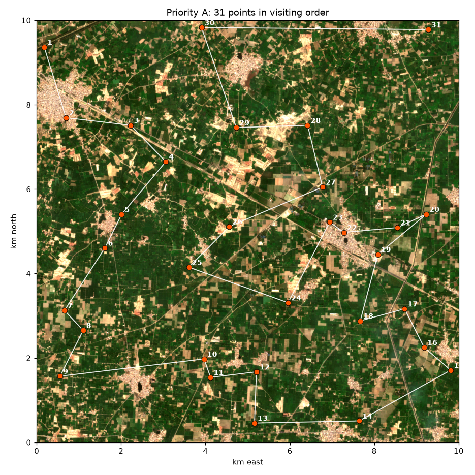
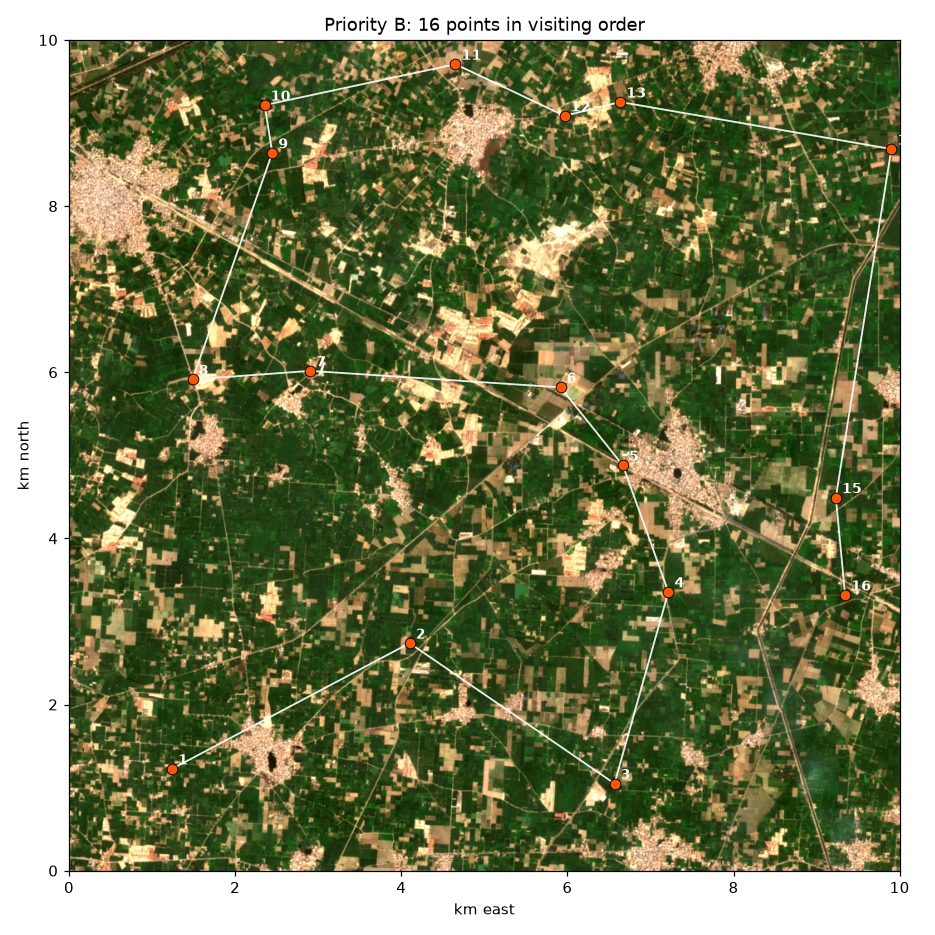

Visit every Priority A point; Priority B only if time allows. At each point: stand at the coordinates (tap the link to open Google Maps), check you are on the outlined field, take 4 photos (N, E, S, W), then ask the farmer. This sheet deliberately shows no labels or model predictions, so that what you record stays independent.
| # | Field | Coordinates | Visited | Land use / crop now | Last winter (farmer) | Sure? | Outline OK? | Photos | Notes |
|---|---|---|---|---|---|---|---|---|---|
| A1 | g0000 | 31.23228, 74.25195 | |||||||
| A2 | g0200 | 31.21721, 74.25749 | |||||||
| A3 | g0202 | 31.21569, 74.27359 | |||||||
| A4 | g0303 | 31.20793, 74.28237 | |||||||
| A5 | g0402 | 31.19663, 74.27147 | |||||||
| A6 | g0501 | 31.18940, 74.26736 | |||||||
| A7 | g0600 | 31.17600, 74.25743 | |||||||
| A8 | g0701 | 31.17177, 74.26210 | |||||||
| A9 | g0800 | 31.16195, 74.25644 | |||||||
| A10 | g0803 | 31.16583, 74.29220 | |||||||
| A11 | g0804 | 31.16191, 74.29385 | |||||||
| A12 | g0805 | 31.16315, 74.30525 | |||||||
| A13 | g0905 | 31.15219, 74.30485 | |||||||
| A14 | g0907 | 31.15279, 74.33087 | |||||||
| A15 | g0809 | 31.16375, 74.35355 | |||||||
| A16 | g0709 | 31.16857, 74.34693 | |||||||
| A17 | g0608 | 31.17681, 74.34198 | |||||||
| A18 | g0707 | 31.17418, 74.33099 | |||||||
| A19 | g0508 | 31.18839, 74.33526 | |||||||
| A20 | g0409 | 31.19708, 74.34726 | |||||||
| A21 | g0408 | 31.19417, 74.34006 | |||||||
| A22 | g0507 | 31.19306, 74.32678 | |||||||
| A23 | g0406 | 31.19525, 74.32322 | |||||||
| A24 | g0605 | 31.17796, 74.31302 | |||||||
| A25 | g0503 | 31.18542, 74.28829 | |||||||
| A26 | g0404 | 31.19419, 74.29827 | |||||||
| A27 | g0306 | 31.20273, 74.32141 | |||||||
| A28 | g0206 | 31.21591, 74.31760 | |||||||
| A29 | g0204 | 31.21533, 74.29987 | |||||||
| A30 | g0003 | 31.23668, 74.29104 | |||||||
| A31 | g0009 | 31.23653, 74.34746 |

| # | Field | Coordinates | Visited | Land use / crop now | Last winter (farmer) | Sure? | Outline OK? | Photos | Notes |
|---|---|---|---|---|---|---|---|---|---|
| B1 | g0801 | 31.15889, 74.26366 | |||||||
| B2 | g0704 | 31.17272, 74.29357 | |||||||
| B3 | g0806 | 31.15761, 74.31956 | |||||||
| B4 | g0607 | 31.17846, 74.32621 | |||||||
| B5 | g0506 | 31.19216, 74.32037 | |||||||
| B6 | g0405 | 31.20060, 74.31244 | |||||||
| B7 | g0302 | 31.20222, 74.28079 | |||||||
| B8 | g0401 | 31.20121, 74.26592 | |||||||
| B9 | g0102 | 31.22587, 74.27582 | |||||||
| B10 | g0002 | 31.23105, 74.27480 | |||||||
| B11 | g0004 | 31.23563, 74.29890 | |||||||
| B12 | g0005 | 31.23010, 74.31274 | |||||||
| B13 | g0006 | 31.23164, 74.31975 | |||||||
| B14 | g0109 | 31.22671, 74.35406 | |||||||
| B15 | g0509 | 31.18881, 74.34730 | |||||||
| B16 | g0609 | 31.17823, 74.34855 |

After the visit: copy the answers into ground_truth_form.csv, save it as labels/ground_truth.csv, and run
python s2_ground.py.